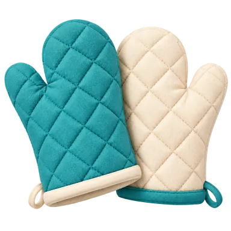
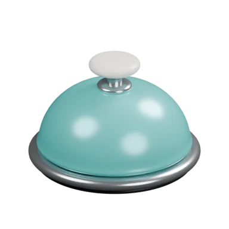
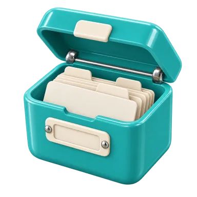

1. Структура навігації
Продукт — лінійний потік «ідея → рецепт → кошик → кухня». Історія і профіль вторинні.
Куди покласти верхній рівень?
9:41
Що готуємо сьогодні?
Опиши страву або напиши, що є вдома
Згенерувати
Паста на двохЩось із куркоюНе знаю, здивуй мене
A · Один Stack + toolbar Picked
Головна — корінь. Чат — push. Кухня — push. Історія, налаштування, ідея — formSheet.
Історія та профіль живуть у правій частині хедера й не рухаються між головною і
чатом.
+ ніщо не відволікає від композера; кухня не мусить ховати таб-бар; найменше
коду. − історія на один тап далі, ніж у табі.
tab-bars.md › Best practices: «Use a tab bar to support navigation, not to provide
actions»; toolbars.md › Phone (iOS): «Prioritize only the most important items».
9:41
Що готуємо сьогодні?
Опиши страву або напиши, що є вдома
Згенерувати
Паста на двохЩось із куркою
B · NativeTabs: Кухня · Історія · Профіль
Три системні таби зі скла. Історія стає повноцінним списком, профіль — екраном.
+ найзвичніша iOS-структура, історія в один тап. − два з трьох табів —
рідкі екрани; кухня на весь екран має ховати таб-бар (HIG дозволяє лише для
модалок); таб-бар з'їдає 64pt над композером.
9:41
Нова розмоваІсторіяСпогадиНалаштуванняВийти
C · Бічне меню («гамбургер»)
Усе вторинне — у висувній панелі зліва.
+ необмежено пунктів. − не iOS-патерн, ховає розташування користувача,
конфліктує зі swipe-back у стеку.
2. Де живе шахівниця і неон
На вебі смуга 48px стоїть над усім. На iOS хедер прозорий і скляний, а зверху — safe
area. Куди дівати підлогу дайнера?
9:41
Паста з креветками
Ти й Аня · 2 порції
Твій крок
Дрібно наріж часник
A · Смуга 24pt — перший елемент контенту Picked
Стоїть одразу під хедером і прокручується під скло. У стані спокою хедер лежить на
кремі, кнопки читаються. Тільки на кореневих екранах; аркуші отримують лише неон як
верх липкого футера.
+ ідентичність є, кнопки хедера монохромні й читабельні. − підлога «на
стелі»; забирає 26pt, доки не прокрутив.
liquid-glass.md › Color on glass: «the resting state… must keep controls legible».
B · Шахівниця за скляним хедером
Смуга закріплена у зоні статус-бару і хедера; скло її розмиває.
+ підлога завжди на місці, навіть при прокрутці. − контрастна
шахівниця під склом робить кнопки хедера і час нечитабельними; Reduce Transparency
дає суцільну сіру смугу.
9:41
Паста з креветками
Твій крок
Дрібно наріж часник
C · Підлога внизу, над home indicator
Семантично точно: шахівниця — підлога. Неон — її верхній край.
+ красива метафора. − саме внизу живуть композер, док і CTA; скло над
шахівницею мерехтить і бореться з home indicator.
3. Головна: герой і порожній композер
Порожній стан головної — єдине місце, де продукт представляє себе. Що є героєм?
9:41
Що готуємо сьогодні?
Опиши страву або напиши, що є вдома
Згенерувати
Паста на двохЩось із куркоюВечеря за 30 хвНе знаю, здивуй мене
A · Табличка + хромований композер + теги Picked
Пряме перенесення веб-героя. Композер і є порожнім станом; підказки — ink-теги.
Рейку «Ідея з'явиться тут» прибрано.
+ максимальна впізнаваність; завдання видно одразу. − клавіатура ховає
теги — тому екран keyboard-aware, CTA лишається над клавіатурою.
9:41
Меню дня
Паста на двох25 хв
Щось із куркою40 хв
Не знаю, здивуй мене?
B · Чорна дошка меню, композер під нею
Швидкі підказки як дайнерівське меню на чорній дошці з лаймовими літерами; поле
вводу другорядне.
+ сильний, запам'ятовуваний образ. − підказки — випадкові й не є меню;
чорна дошка зарезервована під таймери (один колір — одне значення).
9:41
Що готуємо сьогодні?
Опиши страву або напиши, що є вдома
Згенерувати
C · Кухонна сцена з екрана підключення
Той самий фон, що й на Connect; композер плаває над стільницею.
+ безшовний перехід від підключення. − сцена під клавіатурою зникає,
теги нема куди ставити, у чаті фон все одно кремовий — розрив.
4. Стиль композера
Один композер працює на головній, у чаті та в помічнику. На головній він — контент; у
чаті — плаває над стрічкою.
9:41
Паста з креветками на двох
Легка паста з часником і лимоном. Почнімо з інгредієнтів…
Є два варіанти соусу…
Уточни або попроси інше↑
A · Хромована картка всюди
Непрозорий хром і на головній, і в чаті.
+ одна форма. − непрозорий блок на стрічці ріже контент; стрічка не
просвічує, скроловий край виглядає «веб».
9:41
Паста з креветками на двох
Легка паста з часником і лимоном. Почнімо з інгредієнтів…
Є два варіанти соусу…
Уточни або попроси інше↑
B · Скляна капсула всюди (t3)
GlassView-капсула, що розгортається у картку при фокусі; така сама на головній.
+ найнативніше. − на головній композер — герой і контент, а скло в
контенті HIG забороняє; губиться хром як знак «це наш продукт».
9:41
Паста з креветками на двох
Легка паста з часником і лимоном. Почнімо з інгредієнтів…
Є два варіанти соусу…
Уточни або попроси інше↑
C · Гібрид: хром удома, скло з хромованим кантом у чаті
Picked
На головній — непрозора хромована картка з лаймовим CTA всередині (контент-шар). У
чаті й помічнику — скляна капсула з 2pt хромованим кантом, що розгортається на 220ms
при фокусі; кнопка «надіслати» — чорне коло 32pt.
+ шар контенту/функцій дотримано, хром лишається підписом. − дві
оболонки для одного тіла; скло поверх хрому треба перевірити на Reduce Transparency
(стає білим).
liquid-glass.md › Where the material belongs: «Don't use Liquid Glass in the content
layer».
5. Поява тексту агента
Відповідь приходить стрімом. Як її показувати, щоб частковий markdown ніколи не ламався
і стрічка не стрибала?
9:41
Паста з креветками на двох
Легка паста з часником і лимоном. Почнімо з інгре
A · Посимвольно (useSmoothText)
Текст друкується, як на вебі.
+ відчуття живого друку. − частковий markdown (`**жирн`) миготить;
висота рядка змінюється щокадру; хаптика на кожен символ неможлива.
9:41
Паста з креветками на двох
Легка паста з часником і лимоном. Почнімо з інгредієнтів.
Для двох вистачить 250 г спагеті і 300 г креветок.
Соус зберемо з оливкової олії…
Пишу відповідь…
B · Абзацами з fade-in Picked
Буфер показує тільки завершені абзаци і списки (`splitBufferedAssistantText`), не
частіше 400ms; новий блок входить FadeIn 220ms; `selectionAsync` на блок (≤
1/320ms). Після завершення — повний текст.
+ рендер завжди валідний, стрічка рухається великими спокійними кроками,
хаптика відчувається як «пульс». − перший блок з'являється пізніше (до 1–2
с), тому рядок статусу обов'язковий.
generative-ai.md › Outputs: «Factor processing time into your design».
9:41
Паста з креветками на двох
C · Скелет, потім уся відповідь
Поки стрім іде — скелет; текст показуємо одним разом по завершенні.
+ нуль миготіння. − 10–20 с без змісту при довгих відповідях;
втрачається перевага стріму.
6. Індикатор «агент працює»
Агент шукає рецепти, читає сторінки, підбирає товари в Сільпо. Де показувати конкретну
активність?
9:41
Паста з креветками на двох
Легка паста з часником і лимоном.
Підбираю товари в Сільпо…
Уточни або попроси інше↑
A · Рядок у стрічці: каструля + shimmer Picked
Останній елемент стрічки: каструля 20pt (гойдається, поки йде запит) і shimmer-напис
з конкретною дією: «Шукаю рецепти…», «Читаю сторінку…», «Підбираю товари в Сільпо…».
+ там, куди дивиться око; прокручується разом із контентом; дешево.
− при прокрутці вгору його не видно — тому є скляна кнопка «вниз».
generative-ai.md › Outputs: «Consider giving specific, reassuring feedback during
generation».
9:41
Паста з креветками на двох
Легка паста з часником і лимоном.
Підбираю товари в Сільпо…
Уточни або попроси інше↑
B · Плаваюча скляна капсула над композером (t3)
Завжди видно, навіть якщо прокрутив.
+ помітно. − третя скляна поверхня на екрані; перекриває останні рядки
відповіді; конкурує з пік-баром ідеї.
9:41
Паста з креветками на двох
Легка паста з часником і лимоном.
Уточни або попроси інше↑
C · Статус у заголовку хедера
Заголовок навігації стає рядком статусу (як «Підключення…» у Messages).
+ нуль місця в контенті. − далеко від відповіді; shimmer у системному
хедері виглядає чужорідно; заголовок у нас порожній навмисно.
7. Уточнювальні питання (1–4 питання, 2–5 варіантів)
`ask_user` зупиняє агента, доки людина не відповість. Як подати форму, щоб не вибивати з
розмови?
9:41
Паста з креветками на двох
Уточнення до страви1 з 2
Який соус?
Обери один варіант
1Вершковий2Томатний3Часник і олія
Або напиши свій варіант
НазадДалі
Або напиши відповідь…↑
A · Картка у стрічці, одне питання за раз Picked
Питання — повідомлення агента з ink-тегами в стовпчик. Одиничний вибір
авто-переходить через 200ms. Композер лишається: написати текстом — теж відповідь.
+ контекст розмови видно, нічого не відкривається; відповідь згортається у
«Твої відповіді». − довгі варіанти займають екран — тому не більше одного
питання одночасно.
9:41
Паста з креветками на двох
Маю два уточнення.
Який соус?✕
1 з 2 · Обери один варіант
1Вершковий2Томатний3Часник і олія
НазадДалі
B · formSheet (0.55), одне питання на сторінку
Модальний аркуш із кроками й лаймовим «Далі».
+ великі цілі, системний жест. − модалка ховає розмову і забороняє
відповісти текстом; закрив аркуш — питання «зникло»; аркуш над чатом, що й так має
композер.
9:41
Паста з креветками на двох
Маю два уточнення.
Який соус?1 / 2
ВершковийТоматнийЧасник і олія
Написати повідомленняДалі
C · Композер перетворюється на форму (веб)
Поле вводу замінюється карткою питань; кнопка «Написати повідомлення» повертає поле.
+ точна копія вебу. − на 390pt форма внизу перекриває пів екрана і
стрибає з клавіатурою; плаваючий шар не має містити форму.
8. Пік ідеї та аркуш ідеї
Ідея зберігається у фоні, поки людина читає чат. Як оголосити й відкрити рецепт, товари
та кошик?
9:41
Паста з креветками на двох
Зберіг рецепт і підібрав 6 товарів у Сільпо. Відкрий ідею, щоб перевірити.
Ідея готова
Паста з креветками
›
Уточни або попроси інше↑
A · Peek-бар над композером → formSheet 0.6 / 1 Picked
Картка 56pt з мініатюрою, «Ідея готова» і назвою входить через morph 220ms. Тап
відкриває formSheet із детентами 0.6 і 1, grabber, липким футером кошика. На 0.6
видно фото, табличку й початок рецепта.
+ розмова не переривається; аркуш — природне місце для «переглянь і
повернись». − ще один шар над композером; при клавіатурі пік ховається.
sheets.md › Mobile: «consider supporting the medium detent to allow progressive
disclosure».
9:41
Паста з креветками на двох
Зберіг рецепт і підібрав 6 товарів.
Паста з креветками
25 хв · 2 порції · 6 товарів
Готуємо разомТовари
B · Аркуш відкривається сам на 0.4, щойно ідея готова
Без піку: аркуш вискакує на низький детент і чекає.
+ нуль тапів до рецепта. − переривання: людина може саме друкувати;
аркуш закриває стрім і композер; HIG: модалка — для коротких завдань, не для
сповіщень.
9:41
Паста з креветками
25 хв · 2 порції
Легка паста з часником і лимоном для двох.
Продукти в Сільпо
Спагеті · 250 г
Barilla №5 500 г
89 ₴
C · Окремий екран «Ідея» (push)
Пік веде на повноекранний push з власним хедером.
+ багато місця, версії та кошик як секції. − втрачається паралельність
«читаю ідею — уточнюю в чаті»; повернення назад щоразу перемальовує стрічку.
9. Кошик
Товари, сума без доставки, одна лаймова дія «Додати N товарів у кошик», потім
«Перевірити й оформити». Де тримати суму й кнопку?
Страва і товари✕
Паста з креветками
Продукти в Сільпо
Спагеті · 250 г
Barilla №5
89 ₴
Креветки · 300 г
Не знайдено в Сільпо
Разом, без доставки437 ₴
Додати 6 товарів у кошик
A · Секція в кінці аркуша (веб)
Сума і кнопка — після списку товарів.
+ просто, одна прокрутка. − головна дія захована під 10–20 рядками; на
детенті 0.6 її не видно взагалі.
Страва і товари✕
‹Версія 2 з 3›
Паста з креветками
25 хв · 2 порції
Продукти в Сільпо
Спагеті · 250 г
Barilla №5
89 ₴
B · Липкий футер з неоновим краєм Picked
Сума і лаймова дія закріплені внизу аркуша на будь-якому детенті; верхній край —
неонова лінія (вона на вебі стоїть перед результатами). Коли кошик є — футер показує
«До сплати» і «Перевірити й оформити».
+ дія завжди під пальцем; товари прокручуються незалежно. − футер
займає ~110pt; на 0.6 рецепта видно менше.
Кошик Сільпо✕
6
Готовий до перевірки
До сплати 1 204 ₴
Товари1 125 ₴
ДоставкаУточнюється
Перевір товари перед замовленням: 1 товар замінено
Перевірити й оформити
C · Окремий аркуш кошика з кнопки в хедері аркуша ідеї
Товари лишаються в ідеї; кошик — свій аркуш із деталями.
+ чисте розділення. − аркуш над аркушем (HIG: один за раз → треба
закривати перший); зайвий крок до головної дії.
10. Налаштування «Готуємо разом»
Кількість кухарів 1–12, ім'я господаря (якщо невідоме), одна дія «Створити кухню».
Скільки вас готує?✕

−3 кухарі+
Твоє ім’я
Наприклад, Аня
Створити кухню
A · formSheet fitToContents зі степером Picked
Прямий перенос веб-форми: рукавиці 88pt, степер з двома ink-кнопками 44pt, поле
імені тільки коли ім'я не вдалося визначити, лаймова дія.
+ одна дія, один аркуш, той самий компонент для «Приготувати ще раз».
− степер до 12 — це 11 тапів; довгий тап має автоповторювати.
Скільки вас готує?✕
123456+
Твоє ім’я
Наприклад, Аня
Створити кухню
B · Сітка місць 1–6, «6+» відкриває степер
Один тап для типових випадків.
+ швидше за степер для 1–6. − два механізми вибору; «6+» — прихований
режим; на великих шрифтах сітка ламається.
Страва і товари✕
Паста з креветками
25 хв · 2 порції
Готуємо разом
−2 кухарі+
Створити кухню
Продукти в Сільпо
C · Розгортається прямо в аркуші ідеї
Тег «Готуємо разом» розкриває степер і кнопку на місці.
+ без другого аркуша. − дві лаймові кнопки в одному аркуші (кошик +
кухня) ламають бюджет; форма губиться серед рецепта.
11. Лобі
Господар чекає на кухарів (до 12), запрошує посиланням і стартує. Гість бачить, хто вже
тут.
9:41
Томатна вечеря
Збираємося
на кухні
Приєдналися 1 з 3
ООля · тиГосподар
+Чекаємо на кухаря
+Чекаємо на кухаря
Запросити за посиланнямПочати готувати
A · Список із порожніми місцями Picked
Той самий компактний варіант, що обрано на вебі: заголовок і лічильник зліва,
рукавиці 96pt справа, список кухарів і порожніх місць, запрошення і старт під
списком. Запрошення відкриває системний share sheet.
+ масштабується до 12, читається гостем і господарем однаково. − менш
«святково», ніж коло.
9:41
Томатна вечеря
Запросити за посиланнямПочати готувати
B · «Стіл»: аватари по колу
Кухарі сідають довкола овального столу; порожні місця — «+».
+ теплий образ зустрічі. − 8–12 аватарів по колу не читаються, імена
нема куди ставити; на Dynamic Type розвалюється.
9:41
Томатна вечеря
Покажи код або поділись посиланням
Поділитися
О++1 з 3
Почати готувати
C · Спершу запрошення: QR + посилання
Лобі як екран запрошення; учасники — рядок аватарів унизу.
+ запрошення в одній кімнаті через QR — реально зручно. − гість бачить
QR, який йому не потрібен; QR потребує сканера у додатку, щоб мати сенс. Варто
додати QR як кнопку в аркуші запрошення пізніше.
12. Таймлайн і поточний крок
Поточний крок має інструкцію, чекліст, таймер, референс і дію. Інші кроки показують
власника й залежності. Як це розкласти на 390pt?
9:41
1 з 7 кроків
✓Поставити воду
2
Паста вариться
Твій таймер
6:42
3Твій крок
Дрібно наріж часник
Наріж 2 зубчики дрібними шматочками.
Готуємо зображення…
✓Часник почищений
Є питання?Готово, далі
4
Аня · готує зараз
Почистити креветки
A · Вертикальний таймлайн, поточний крок розгорнуто
Picked
Один FlatList: виконані кроки — 50% і закреслені; крок із таймером показує чорну
дошку навіть згорнутим; поточний — картка з чорною рамкою, плиткою номера,
референсом, чеклістом і діями. Розгортання — LinearTransition 220ms.
+ видно, що роблять інші, і що блокує; одне рішення на вебі й у додатку.
− довгий скрол на 12 кроках; тому поточний крок авто-прокручується на 24pt
під хедер.
9:41
3Твій крок
Дрібно наріж часник
Наріж 2 зубчики дрібними шматочками. Чим дрібніше, тим м'якший смак.
Готуємо зображення…
✓Часник почищений
Нарізано дрібно
Готово, далі
B · Картки-сторінки: один крок на екран, свайп
Пейджер; крапки показують позицію.
+ великий текст, нічого зайвого — зручно з брудними руками. − не
видно, що роблять інші й чому крок чекає; спільні кроки й передачі губляться; свайп
конфліктує зі swipe-back.
9:41
3Зараз
Дрібно наріж часник
✓Часник почищений
Готово, далі
Усі кроки
✓Поставити воду
2Паста вариться · 6:42
4Аня · Почистити креветки
C · «Зараз»-картка закріплена, список під нею
Поточний крок завжди зверху; решта — компактний список.
+ дія завжди на місці. − два подання одного плану (веб-правило: не
додавати другу панель); довгий крок з референсом з'їдає весь екран і список зникає.
13. Док таймерів і таймер поза додатком
До 24 активних таймерів у кімнаті. Людина читає інший крок, перемикає застосунки, блокує
екран. Де живуть відліки?
9:41
Аня · готує зараз
Почистити креветки
Разом · очікує
Зібрати пасту
Чекаємо: Соус. Готові: Аня, ще ніхто.
Твій таймер6:42Паста
12:00Соус · Пауза
0:00Час перевірити
A · Скляний док унизу з чорними чипами Picked
GlassView 64pt, горизонтальний скрол чипів-«дощечок»: лаймовий відлік Oswald 20,
назва, «Твій таймер» бірюзою. Тап — прокрутка до кроку. Док з'являється morph'ом
тільки коли є таймери.
+ той самий образ чорної дошки, що на вебі; скло — бо док плаває над
контентом. − ховає 88pt списку; тому список має нижній відступ, а док зникає
без таймерів.
9:41
Аня · готує зараз
Почистити креветки
Разом · очікує
Зібрати пасту
B · Таймер у центрі хедера (Stack.Toolbar центр)
Найближчий таймер — чорна капсула в заголовку; тап відкриває список.
+ не займає контент. − один таймер із 24; капсула з кольором у хедері
суперечить монохромним барам; хедер мерехтить кожні 500ms.
🍝 Паста 6:42
9:41
Паста вариться
Multiplayer Cooking · Твій таймер
6:42
Lock Screen · Live Activity
C · Live Activity + Dynamic Island (фаза 2)
Запущені таймери — в Live Activity: чорна дошка з лаймовим відліком на екрані
блокування, компактно в Dynamic Island. Тап відкриває крок.
+ саме те, для чого існують Live Activities (визначений початок і кінець, ≤ 8
год); таймери видно з мокрими руками через стіл. − потребує WidgetKit-таргета
(expo-apple-targets / dev build), серверних пушів для синхронізації між кухарями.
Плануємо після першого релізу; локальне сповіщення при спрацюванні — вже в першій
версії.
live-activities.md › Best practices: «Offer Live Activities for tasks and events
that have a defined beginning and end».
14. Вхід у помічника
Помічник — спільний чат кухні з нотатками й пропозиціями змін. Він має бути доступний
завжди, але не заважати кроку.
9:41
Твій крок
Дрібно наріж часник
Є питання?Готово, далі
✎ Є відповідь
A · Плаваюча кнопка внизу праворуч (веб)
Скляна капсула «Помічник / Є відповідь», що піднімається над доком.
+ завжди видно. − FAB — патерн Android; четверта плаваюча річ над
контентом разом із доком і CTA; перекриває кнопку «Готово, далі».
9:41
Твій крок
Дрібно наріж часник
Наріж 2 зубчики дрібними шматочками.
✓Часник почищений
Є питання?Готово, далі
4
Аня · готує зараз
Почистити креветки
B · Кнопка в хедері з крапкою + «Є питання?» у кроці
Picked
SF `bubble.left.and.text.bubble.right` у toolbar з маджентовою крапкою «Є
відповідь»; у кожному кроці — ghost «Є питання?», що відкриває помічника з
контекстом цього кроку. Помічник — formSheet 0.92.
+ нічого не плаває над контентом, окрім дока; контекстний вхід там, де
виникає питання. − хедер має три кнопки — межа; «Порції» та «Кухарі» тому в
меню ⋯.
toolbars.md › Phone (iOS): «Create a More menu to include additional items».
9:41
Твій крок
Дрібно наріж часник
C · Нижні таби всередині кухні: Кроки · Таймери · Помічник
Кухня стає власним таб-контейнером.
+ помічник і таймери — повноцінні екрани. − таби ховають таймлайн під
час читання помічника, а відлік потрібен одночасно; таб-бар у push-екрані —
нестандартно.
15. Момент завершення
Усі кроки виконані. Один раз на кімнату — свято, фото страви, «Приготувати ще раз», шлях
назад до інструкцій.
9:41
Смачного!
Рамьон з креветками
2 кухарі · 2 порції
Приготувати ще разДо інструкцій

A · Квиток дайнера на весь екран Picked
Обраний на вебі квиток: біла картка з 2pt чорним контуром, зубчастим низом (SVG),
фото 16:10, хромована табличка «Смачного!», дзвоник 88pt. Push з fade, без «назад»;
зліва «До інструкцій», справа системний Share. Конфеті 2 с,
`notificationAsync(Success)` один раз.
+ момент, який запам'ятовується; поділитися — рідна дія. − ще один
екран у стеку; квиток не вміщується на 4.7" без прокрутки.
feedback.md › Best practices: «When it makes sense, confirm that a significant
action or task has completed».
9:41
Смачного!
Рамьон з креветками
2 кухарі · 2 порції
Приготувати ще раз
B · Квиток як аркуш над таймлайном
formSheet 0.7 над завершеним таймлайном; свайп униз = «До інструкцій».
+ без окремого маршруту, свайп замість кнопки. − аркуш читається як
«тимчасове», а не фінал; конфеті в аркуші не вміщується; зубчастий край губиться.
9:41
Смачного!
Рамьон з креветками
Оля й Аня · 2 порції · 48 хв
Поділитися фотоПриготувати ще раз
C · Share-card: фото на весь екран зі штампом
Герой — велике фото зі штампом «Смачного!», головна дія — поділитися.
+ найкраще для соцмереж. − фото часто згенероване, а не справжнє —
ділитися нічим; «Приготувати ще раз» відходить на другий план; квиток із вебу
зникає.
16. Підхід до ілюстрацій порожніх станів
Історія, спогади, товари, нотатки, таймери, приєднання. Що показувати, коли нічого
немає?
Історія розмов✕

Тут з'являться попередні розмови.
A · Сімейство soft-3D, 80–112pt, по центру Picked
Існуючі бірюзові об'єкти там, де вони вже є на вебі; шість нових у тому самому стилі
(фартух, порожня табличка, ополоник, планшет, таймер, чайник). Одне речення під
ілюстрацією, за потреби — ink-тег дії.
+ ілюстрації — найсильніша частина ідентичності; порожній стан не схожий на
шаблон. − 6 нових ассетів треба згенерувати й перевірити на 3×.
Історія розмов✕
Тут з'являться попередні розмови.
B · Монохромні контурні іконки (Hugeicons 56pt)
Велика контурна іконка в `mutedForeground`.
+ нуль ассетів, миттєво. − виглядає як будь-який інший додаток;
суперечить веб-рішенню про сімейство.
9:41
Тут з'являться
попередні розмови
C · Повноекранні сцени, як на Connect
Кожен порожній стан — своя кухонна сцена.
+ ефектно. − аркуші не мають місця для сцени; дорого; сцена перебиває
завдання (HIG: branding defers to content).
17. Запит адреси доставки
Адреса потрібна Сільпо для цін і кошика. Вона зберігається тільки на сервері й ніколи не
потрапляє в тред чи до моделі.
9:41
Рецепт готовий. Щоб підібрати товари, потрібна адреса.
Адреса доставки
Потрібна, щоб Сільпо показало ціни і зібрало кошик. Зберігається лише на
сервері, модель її не бачить.
Одеса, пров. Семафорний, 4
Зберегти адресу
Уточни або попроси інше↑
A · Захищена картка у стрічці (веб) Picked
Остання картка стрічки з полем `textContentType="fullStreetAddress"`, ghost
«Зберегти адресу», shimmer «Готуємо кошик Сільпо». Окреме поле — тому текст не
проходить через композер і тред.
+ приватність очевидна й технічно гарантована; автозаповнення адреси з iOS.
− картка може опинитися під піком ідеї — стрічка має відступ.
generative-ai.md › Privacy; entering-data.md: «pull from the system».
9:41
Рецепт готовий. Щоб підібрати товари, потрібна адреса.
Адреса доставки✕
Зберігається лише на сервері, модель її не бачить.
Одеса, пров. Семафорний, 4
Зберегти адресу
B · formSheet з полем
Аркуш піднімається з клавіатурою.
+ фокус на одному полі. − ще одна модалка над чатом; після закриття не
зрозуміло, чи стан змінився; лайм витрачається не на головну дію екрана.
9:41
Адреса доставки
Потрібна для цін і кошика Сільпо
Місто, вулиця, будинок
СкасуватиЗберегти
C · Системний Alert із полем
`Alert.prompt` з текстовим полем.
+ мінімум коду. − Alert — для критичної інформації, не для вводу
даних; немає автозаповнення адреси, довгі адреси не вміщуються, стан «готуємо кошик»
нема де показати.
18. Історія розмов
Список розмов і кухонь із фото, відносним часом, видаленням і переходом до кухні.
Історія розмов✕
Паста з креветками
5 хвилин тому · відкрита
Томатна вечеря
вчора, 14:30
🍲
A · formSheet 0.6 / 1 з хедера Picked
Кнопка `clock.arrow.circlepath` у toolbar головної і чату. Рядки 64pt, свайп уліво —
«Видалити», бірюзовий фон у відкритої розмови, кнопка каструлі веде на кухню.
+ історія не займає місце в структурі; свайп-видалення замість окремої
кнопки. − на один тап далі, ніж таб.
9:41
Паста з креветками
5 хвилин тому
Томатна вечеря
вчора, 14:30
B · Таб «Історія»
Повноекранний список із великим заголовком і пошуком.
+ пошук по історії природний. − тягне за собою таб-бар на головній
(див. тему 1).
9:41
Паста з креветками
5 хвилин тому
Томатна вечеря
вчора, 14:30
C · Push-екран
Звичайний список у стеку.
+ великий заголовок, пошук. − відкриття розмови з історії push-ить чат
поверх історії — стек росте; повернення «назад» потрапляє в історію, а не додому.